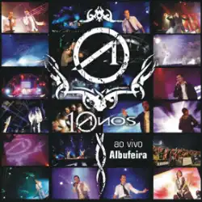
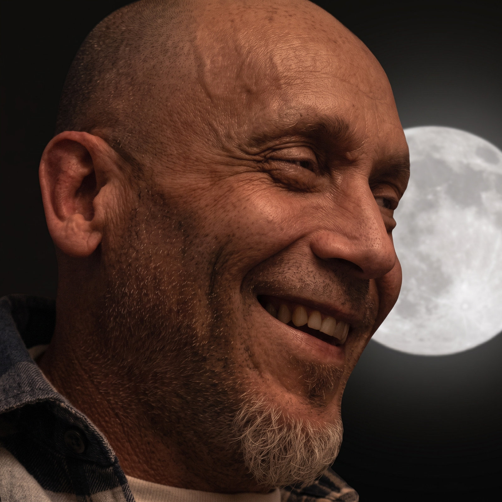
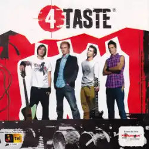
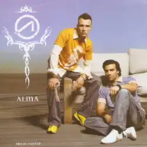
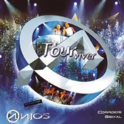
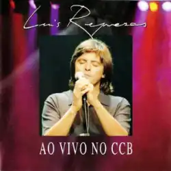

10 Anos - Ao Vivo
ANJOS · Concert DVD / CD
Production, Editing, Stereo & 5.1 Mixing, Keyboards
Gold / Platinum ReleaseCOMPOSER • MUSIC PRODUCER • ARRANGER
SOUND DESIGNER • SOUND ENGINEER
Bringing musical instinct and technical precision to the studio, the stage and what comes next.
Explore my work
I am Luis Santiago Pinto, a composer, music producer, arranger, keyboardist, sound designer and sound engineer based in Portugal. From performing as a child to producing records and music for media, I’ve always worked across the creative and technical sides of sound.
As co-owner and Technical Director of Sonic State Studios, I spent about a decade in Portuguese record production, with credits on multiple platinum and gold-certified releases. Today, I bring that experience to composition and collaborations in music and audio technology.
A small selection of production, performance,
arrangement, and sound engineering credits.
Certifications: Portugal.

ANJOS · Concert DVD / CD
Production, Editing, Stereo & 5.1 Mixing, Keyboards
Gold / Platinum ReleaseJUST GIRLS
Production, Recording, Editing, Mixing, Mastering, Keyboards, Programming, String & Brass Arrangements
Quadruple-Platinum Album Release
4TASTE
Production, Recording, Editing, Mixing, Keyboards, String Arrangements
Quadruple-Platinum Album Release
ANJOS
Production, Recording, Editing, Mixing, Keyboards, Programming, String & Brass Arrangements
Platinum Album ReleaseANJOS
Production, Recording, Editing, Mixing, Keyboards, Programming, String Arrangements
Platinum Album Release
ANJOS · Concert DVD / CD
Production, Editing, Stereo & 5.1 Mixing, Keyboards
Platinum Release
LUIS REPRESAS · Concert CD
Keyboards, Backing Vocals
Double-Platinum ReleaseLUIS REPRESAS
Synth Programming
Platinum Album ReleaseAs a keyboardist, I’ve played hundreds of concerts worldwide with Portuguese artists, including:
Original music with a purpose.
Written, played and produced for the picture.
I began composing and producing music for media in 2012. Since 2016, I’ve worked mainly with Pond5 under the pseudonym Deo Strozza, combining composition, arrangement, production and sound design to serve the story.
Listen to a selectionA selection from my music-for-media catalogue, alongside trailers, promotional videos and other media featuring my compositions.
SELECTED MEDIA PLACEMENTS


Helping music and audio AI teams assess what their systems produce through the trained ears of a musician, producer and sound engineer is one of my most recent interests. Technically plausible audio is not always musically convincing.
Composition, harmony, melody, phrasing, arrangement and musical coherence. Assessing how the structure works in music, and whether the result serves its intent.
Comparative listening, audio quality assessment and artefact detection, informed by years of music production, recording, editing, mixing and mastering.
Music description, tagging and brief adherence. Connecting what a system identifies with the musical context and what a listener actually perceives.
Open to remote freelance, consulting and project-based work in generative music evaluation, music intelligence, dataset curation and audio quality assessment—including human feedback (RLHF) and human-in-the-loop evaluation.
Logic Pro · Ableton Live · Pro Tools · iZotope RX · SpectraLayers · Dorico
Melodyne · VocAlign Pro · Synthesizer V Studio 2 Pro · Analogue & digital synthesisers · Samplers & sample libraries
Workflow automation: MetaGrid Pro · Keyboard Maestro
Scripting: Python · JavaScript · Logic Pro Scripter · Kontakt Script Processor (KSP)
· Composition
· Music Production
· Arrangement / Orchestration
· Sound Design
· Sound Engineering
· Music & Audio AI evaluation
Based in Portugal. Available for remote collaboration worldwide.